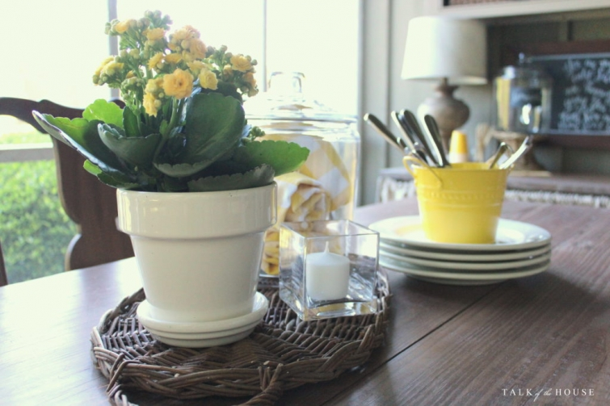
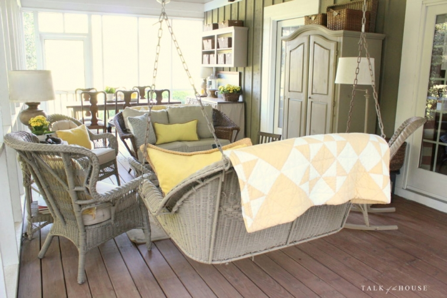
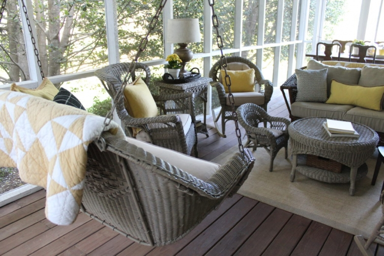

.png)
.PNG)
.PNG)
.PNG)
.PNG)
.PNG)
.JPG)
.JPG)
.PNG)
.PNG)



At the very end of April I shared part 1 of this no-special-occasion tour with you, and in the last post you read we hosted our daughter’s graduation party outside in our yard.  That meant nothing had to be done to the inside of the house for that party. Yippee!  (A million things outside, but at least nothing inside. 🙂 )
So before I start “summer-izing” the rooms around here, I thought we would finish the tour of the house in my favorite non-seasonal decor.  Come on in the back door of the screened porch this time. 🙂
Yellow yellow everywhere on the porch!
 With a few black accents to contrast with it.
With a few black accents to contrast with it.
Some of you had suggested using yellow plates in the wall arrangement back when we looked at the Easter version of it.  I took your advice, and it turned out very pretty. 🙂
With all the yellow, the lyrics for You Are My Sunshine seemed a good choice for the chalkboard.
The table has another super simple centerpiece (try saying that 3 times fast!) Â It is much like the one in the dining room with a plant, a tray, and a jar of napkins.
Lemonade is the perfect drink for the back porch at this time of year.
Those drought tolerant kalanchoes have really done well on the porch – better than any other plant I have tried to grow out there.
That’s all there is to see of the porch, so let’s take our tour into the house to the playroom.
I just kept with the playfulness of the space in the chalkboard messages in there, and I didn’t add any other color to the green accents.
But since the time I took these photos, the sofa has changed. Â Our daughter had the other traditional sofa that had previously been in there with her in her apartment. Â She will be working in Oklahoma this summer and with Disney in the fall and winter, so we moved the other sofa home last week. Â The wicker sofa has had to go find another place to live (the back porch – which booted the loveseat out from there.) Â Anyway, after all the “musical chairs” with the sofas, IÂ painted the wicker one black to match all the chairs at the graduation party. (Good eye Sue for noticing that!) Â I will be painting it back to the khaki color again very soon.
The end table is easily decorated with games and gumballs – appropriate for this room. 🙂
And my all time favorite words for the big chalkboard are up in there.
Now wander across the hall to my workroom for a second.
No changes for the room – except I have managed to keep a plant alive in there! 🙂
Our last stop before we finish the tour and leave out the side door is the undecorated hallway.
I really like the pop of my yellow sweater there.
And that is the end of our plain-Jane tour. Â As you leave, you might want to take a look at my herb garden. Â (I’m afraid it is becoming more and more of a flower garden and less and less of an herb one.) Â The rain is really making everything so green. Â When all the daisies bloom, it is going to be a beautiful little spot!
Thank you to everyone who left your very sweet comment on the graduation party in the last post. Â You are all too kind!!! Â I hope you have a fun Friday and a wonderful weekend!
Until next time…


.PNG)
Hi Kelly,
I love your site! I don’t get to comment as much as I’d like, but wanted you to know that I turned to your site to help with a dinner party I was throwing. I wanted decorating ideas for the table and recipes. Thanks so much for sharing all of your pictures with us. It’s a great help, plus, some days, it’s just a much needed place to go to day dream! 🙂
Rhonda
Kelly,
Your home is always pretty, no matter the season or celebration. I really like the yellow accents for spring/summer.
The herb/flower garden is really pretty with the contrasting vibrant green grass! 😊🌿🌱🌾
Love the yellow, Kelly! I always feel excited when I see that you are going to give us a porch tour. I still love your porch! But, I love your workroom too! I guess, I just have to admit it, I love it all! It sounds like you won’t be slowing down at all this summer. Hope you keep us along for the ride!!!😉
That was certainly not a “plain Jane tour ” Kelly 🙂
I just love how this colour way works in your house …the touches of yellow are just perfect for the time of year. especially on the porch. Gorgeous throw on the back of your swing seat. Everywhere looks so bright and fresh. Really cute herb garden too!
Hope you’re enjoying the weekend.
Rosemary
Please tell me about the fern on the wall. I am having my garden club luncheon and need something for my porch with a garden theme!
Kelly, your home looks gorgeous as ever! I miss you and wish my handwriting were as pretty as yours. One of these days when I come home to visit, I’m going to have a big stack of things for you to write for me. 🙂 I’ll pay you of course!
Love your posts !! Thanks for sharing it gives me inspiration for getting my outside pretty again after a long winter. Love your wicker furniture wondering where you might have purchased it from ??
It all looks just beautiful Kelly. So fresh and inviting for Spring. You have an absolute gift for making visitors to your home feel welcome. (Including your blog visitors). You must be the most organised person I know. Your creativity is, as aways, an inspiration.
Kelly,
I meant to comment on your last post, I will do so now. Do your kids know how blessed they are to have you for a mom?? Wow!-so impressed with the party you orchestrated. Memories that will last a lifetime…Kudos to you and to your daughter on her graduation. P.S. Love the yellow for summertime.
Laughing at Cindy’s post, “Yes, you will do her wedding.” We can’t wait for that, either. But you may have to have help! Lol! Your home is lovely! I feel comfortable there (on the blog, of course), but you make us feel at home and “invited in”. Always enjoy when your name pops up in my in box!
Yellow is my very favorite color! It makes me happy and is so bright and uplifting. You have a beautiful home. Your home is beautiful!
Everything looks so neat and pretty and organized! You do have a color scheme though … yellow, and you have all of those pops of red in other rooms. I just love your use of color in decorating. I have been looking for a red VW because yours looks so cute. Your chalkboards are always awesome. You have also made me fall in love with gingham and buffalo checks. Good job, Kelly!
Love, love, love the yellow. It looks so cheery on our third day of gray skies. Your screened porch has to be my favorite. I would love to have my morning coffee in your swing. You are probably gearing up for Memorial Day celebrations and red will be back for summer. That makes me smile. Bring on the summer.
And I live in .Ada, OK. In the southern part of our great state! So welcome y’all and questions about people, places, and things to do are most welcome! Becky in Oklahoma
Yea!! Two posts in one week! 🙂 I always love you house tours. The yellow is so pretty. Spring is the only time I use yellow. The black contrasts so well with it. I love how your back porch is just like a room in your home. Mine gets rain blown in unfortunately so no fabric or good furniture. Wow, Oklahoma for the summer, then Disney. I’m sure your daughter is very excited for this next phase in her life. Love your herb/flower garden area too! So pretty. 🙂
You know I love your house in red accents…but…the yellow is refreshing! Love it! Your herb garden is looking great from here…I’m growing herbs in containers this year on our deck. I’m behind in my reading, so I’ll catch up on the graduation party later. Have a great weekend! 😉
Yellow is a favorite color of ours, especially in the Summer – just says happy to us! Your home looks amazing, as always and I love seeing the porch – don’t think I would every be able to go inside…happy weekend, Kelly!
How did you make the wall hanging that has the yellow plates behind it? Cute!
Loving the yellow and that song is going through my head! I know you were able to enjoy the outdoor party knowing that your home was ready inside. It truly looks summer ready!! I’m off today to get new patio cushions that have a black background with white magnolia flowers with a touch of yellow and green. You are so inspiring and thoughtful to share with us and tutor us in the thought process that goes with your homemaking. I must not have gotten that gene!! I think it comes from your logical math thinking which I did not get either!! My mind is racing off thinking about all your adventures ahead during the summer months. Thank you for a great start for a wonderful weekend!! 🙂
Dear Kelly, I also have a question about your chalk boards…
They are always so inspirational and make such a beautiful decoration.
The way we learn to draw letters, as kids, in my country isn’t so beautiful as the english-american ones. Do you pratice that in some way? Do you test them in paper before you move to chalk boards? Can you anyhow show me the way you learn to draw or give me some sites were i can find exercices/tutorials? I would like to improve my handwriting and then think of buying a board. 🙂
hank You. <3
I love seeing your tours!….all of the rooms are so beautifully decorated with the greatest attention to details…always adore your chalkboards. Love the yellows! So glad your plant is still alive in that fabulous work room of yours!…Have a great weekend!
So glad you are back! In my head I knew that you were busy, but there was this little part…that said I hope everyone is okay.
We all have grown to love you and your family!!! So we worry, plus it makes my morning when I have a new post from you.
Now to the beautiful graduation party, everything was wonderful (of course). My favorite thing about the post was your thought process in planning the party. I do lots of parties, get a theme and go with it, you RESEARCH everything. I love it!! When I talk about you, my husband says, is that the lady that redecorated a room to match a backpack. lol. So the fact that you painted a loveseat black, that you are going to turn around and paint again doesn’t surprise me. Congratulations to your daughter and yes, you will do her wedding. Hugs, Cindy
——————————————————————–
Gosh how sweet of you to be concerned Cindy! (Didn’t mean to make you worry though. 🙠) Yes, I am the crazy redecorate-for-the-backpack lady, and yes I will repaint not only the sofa but also 10 of the 24 black chairs. I just love the paint sprayer! LOL
Kelly
I LOVE the yellow – so cheery and sunshiny! And I am always impressed with your calligraphy talent!
———————————————————————
Thank you Talia! I love that yellow too. We need some sunshine color here on this misty rainy day. 🙂
Kelly
Kelly, I have enjoyed your blog for several years now and you have given me great ideas. Thank you for sharing. I have a question, though, how do you get your chalk board sayings so clear? Do you use chalk or those markers? If you use the markers how do you not have shadows of old sayings? My boards just don’t look neat even if I get the lettering the way I like it.
I hope your daughter likes OK. We are in Tulsa if she has any questions. It’s hot here in the summer, but she’ll still need a few sweaters because the air conditioning is fierce.
Robin
——————————————————————-
Hi Robin! Good question! I do use the chalk markers, and they do leave a shadow. I use a magic eraser to scrub the shadows. On some boards that does the trick (like the large one in the playroom.) On other boards (the less expensive ones) I have to come back with regular chalk to “gray it out” and make what is left of the shadows blend in with the background of the board.
Thank you for the info on Oklahoma. Our daughter will be working with a mission team on construction work so I know she is going to get hot. At least their housing is air conditioned. 🙂 And she knows heat from Georgia. Our humidity is what makes our heat so unbearable in the summer. I think my husband and I will be making a road trip for a visit at some point this summer. We’ll get to enjoy your state too! 🙂
Kelly